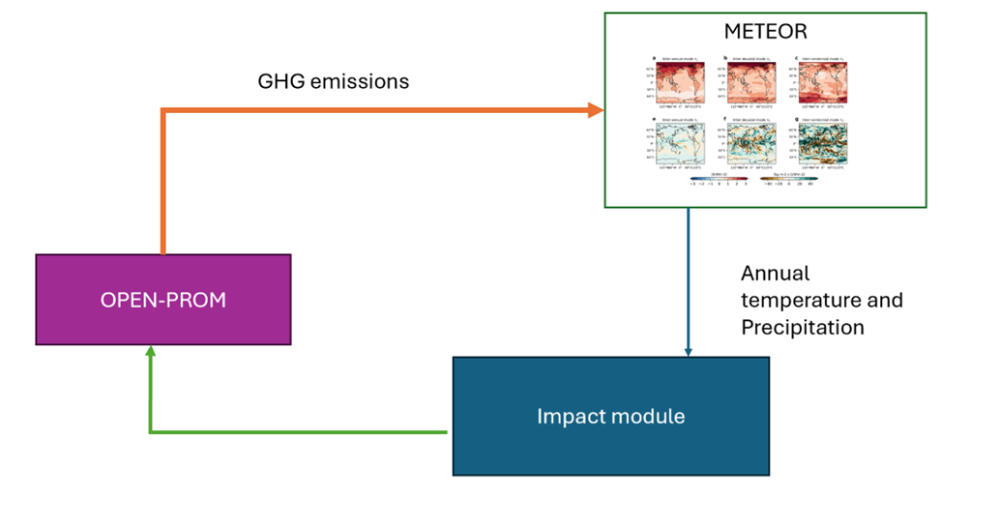

6. Model interlinkages
Note
In brief — This chapter describes how OPEN-PROM is linked to companion models: openTEPES (power-sector detail), METEOR (spatial climate emulation), OMNIA-ENGAGE (circular economy), FTT:Heat (residential heating) and MAgPIE (land use and bioenergy). Of these, only the MAgPIE soft-link is operational in the repository today (task 7); the others are external links that are planned or under development within DIAMOND.
6.1. Link with openTEPES
Note
Status — external / planned. The openTEPES link is described here as an intended DIAMOND development, not as a
feature of the current OPEN-PROM code. There is no operational openTEPES step in the model’s task dispatch
(start.R, tasks 0–7), and the soft-link itself is scheduled for completion in July 2026.
During the DIAMOND project, a link between OPEN-PROM and openTEPES[1] is being developed.
The openTEPES model presents a decision-support system for defining the integrated generation, storage and transmission expansion plan (GEP + SEP + TEP) — Capacity Expansion Planning (CEP) or Integrated Resource Planning (IRP) — of a large-scale electric system at a tactical level (i.e. time horizons of 5–20 years), defined as a set of generation, storage and (electricity, hydrogen and heat) network dynamic investment decisions for multiple future years.
It has been used by the Ministry for the Ecological Transition and the Demographic Challenge (MITECO) to analyse the electricity sector in the latest Spanish National Energy and Climate Plan (NECP) in September 2024. The scenario simulated by openTEPES is the National Trends+ (‘NT+’) scenario, which aligns with national energy and climate policies (NECPs, national long-term strategies, hydrogen strategies, etc.) derived from the European targets, and is the closest to a Current Policy scenario, like the reference scenario of OPEN-PROM.
The link between OPEN-PROM and openTEPES reflects the need for accuracy in the electricity supply mixture of OPEN-PROM, as openTEPES performs a detailed simulation of the electricity supply system with a high time resolution, unit commitment and capacity expansion through various criteria such as cost, flexibility and reserves. openTEPES provides the power generation per technology for 2030, out of which the technology shares are derived. This acts as a checkpoint year which OPEN-PROM uses as a target from its first year of simulation (2024).
As a result, the OPEN-PROM simulation can calibrate its power-supply technology expansion, and therefore shares, with trustful targets for 2030. This soft-link is expected to be achieved during July of 2026.
6.2. Link with METEOR
6.2.1. Overview of METEOR
METEOR[2] — Multivariate Emulation of Time-Evolving and Overlapping Responses (Sandstad, Steinert, Baur, & Sanderson, 2025) — is an open-source spatial climate emulator developed to rapidly translate emissions pathways into regionally resolved climate outcomes. As described in D4.4 of DIAMOND, it is designed to emulate the response of Earth System Models while requiring only a fraction of the computational resources needed to run full climate model simulations. METEOR provides gridded projections of key climate variables, such as temperature and precipitation, and can be applied to a wide range of emissions scenarios, including mitigation and overshoot pathways.
METEOR uses the emissions-to-forcing component of the CICERO Simple Climate Model (C-SCM) (Sandstad et al., 2024) to convert emissions trajectories into radiative forcing pathways. These forcing pathways are then combined with trained spatial response patterns derived from CMIP6 Earth System Model simulations. The resulting outputs provide spatially explicit estimates of climate change, including annual mean temperature and precipitation fields, which can subsequently be processed into variables that are meaningful for impact assessment and integrated assessment modelling.
The latest version, METEOR v1.5, extends the framework by adding monthly climate variability, seasonal cycles, stochastic weather variability, ensemble generation, and a modular impact assessment framework. These developments allow METEOR to produce not only annual mean climate projections, but also sub-annual climate information and impact-relevant indicators. In particular, METEOR v1.5 includes calculators for Heating Degree Days (HDD) and Cooling Degree Days (CDD), which are directly relevant for modelling changes in buildings’ heating and cooling energy demand.
6.2.2. Rationale for linking METEOR with OPEN-PROM
OPEN-PROM is a detailed integrated assessment model that represents the evolution of energy systems, emissions, mitigation pathways and associated technological transitions. However, like many IAMs, its standard scenario setup mainly uses climate outcomes as external or aggregated constraints and does not fully represent spatially resolved climate feedbacks on energy demand, land use, productivity or other socio-economic systems.
The linkage with METEOR addresses this limitation by enabling OPEN-PROM emissions trajectories to be translated into spatial climate outcomes and, subsequently, into impact indicators that can be fed back into the modelling framework. In this way, the OPEN-PROM–METEOR linkage supports a more complete representation of the interaction between mitigation pathways and climate impacts.
The coupling is particularly relevant for climate impacts that are strongly dependent on regional or seasonal climate conditions. Examples include:
changes in residential and commercial heating and cooling demand;
impacts on electricity peak loads due to increased cooling needs;
effects on water availability and energy requirements for water systems.
Within the current implementation, the most direct linkage between METEOR and OPEN-PROM concerns the estimation of climate-driven changes in heating and cooling demand through HDD and CDD indicators. These indicators can be derived from METEOR’s gridded temperature outputs and then aggregated to the regional structure used by OPEN-PROM.
6.2.3. Coupling workflow between OPEN-PROM and METEOR
The coupling workflow starts from an OPEN-PROM scenario run. OPEN-PROM produces emissions trajectories for key greenhouse gases and climate forcers, including CO₂, CH₄, N₂O and sulphur-related emissions. These outputs are exported in an IAM-compatible format and used as the starting point for the climate emulation workflow.
The emissions are then pre-processed and passed to the C-SCM emissions-to-forcing module, which converts the OPEN-PROM emissions trajectories into radiative forcing time series. These forcing time series are subsequently used by METEOR to emulate the spatial climate response associated with the OPEN-PROM scenario. The output consists of gridded projections of climate variables, such as temperature and precipitation, for selected time horizons, including mid-century and end-of-century periods.
The METEOR outputs are then post-processed into a format suitable for OPEN-PROM. This step may include applying regional masks, aggregating gridded climate data to OPEN-PROM regions, calculating regional annual or monthly averages, and deriving impact indicators such as HDD and CDD. These indicators can then be used to adjust model assumptions or parameters related to final energy demand, especially in the buildings sector.
The workflow can therefore be summarised as the following pipeline:
OPEN-PROM emissions scenario
→ IAMC-formatted emissions
→ C-SCM forcing calculation
→ METEOR spatial climate emulation
→ regional aggregation and impact indicators
→ feedback to OPEN-PROM
This workflow can be implemented either as a one-way soft link, where METEOR outputs are used to inform selected OPEN-PROM parameters, or as an iterative coupling, where OPEN-PROM is rerun after climate impact indicators have been updated. The iterative approach would allow climate impacts to influence energy demand, technology deployment, emissions and mitigation pathways, thereby creating a feedback loop between the physical climate system and the socio-economic system represented in OPEN-PROM. The workflow is shown in Fig. 6.1.
{kind=link}

Fig. 6.1 Workflow diagram coupling METEOR and OPEN-PROM.
6.2.4. Added value for OPEN-PROM
The linkage with METEOR provides several benefits for OPEN-PROM:
Spatially explicit climate feedbacks: METEOR translates global emissions pathways from OPEN-PROM into gridded temperature and precipitation projections, allowing climate impacts to be assessed at regional scale.
Improved treatment of uncertainty: METEOR can generate ensembles of climate futures, enabling OPEN-PROM analyses to move from deterministic climate assumptions toward risk-based and probabilistic assessments.
Direct link to impact indicators: METEOR v1.5 includes modular impact calculators, including HDD and CDD, which can be directly used to update energy demand assumptions in OPEN-PROM.
Open-source and reproducible workflow: both the climate emulation and input preparation pipeline are designed to support transparent, reproducible and adaptable coupling with IAMs.
Overall, the OPEN-PROM–METEOR linkage enhances the capacity of OPEN-PROM to assess mitigation pathways under climate feedbacks. It allows emissions scenarios generated by OPEN-PROM to be translated into spatial climate outcomes and impact-relevant indicators, which can then inform subsequent scenario iterations. This represents an important step toward more integrated, feedback-aware climate-energy-economy modelling within the DIAMOND modelling framework.
6.3. Circular economy representation with OMNIA-ENGAGE
Note
Status — external / planned. The OMNIA-ENGAGE link is a DIAMOND harmonisation exercise, not a coded OPEN-PROM workflow. Circular-economy strategies are represented inside OPEN-PROM through exogenous scenario inputs (activity levels, scrap shares, clinker-to-cement ratio); the model itself has no endogenous material-flow representation, and the aluminium and cement parts of the link are still in the design phase.
OPEN-PROM is a simulation-based energy-system model and does not currently include explicit representations of material flows, including the trade of feedstocks and waste. As such, it cannot endogenously model circular economy dynamics in terms of mass balances or material stock-flow interactions.
However, different circular economy strategies — such as material efficiency improvements, increased recycling rates, or reduced primary material demand — can be represented exogenously through scenario-specific assumptions on the activity level. For example, scenarios that represent high recycling rates or significant reductions in the use of a specific material can be captured by adjusting the input activity levels or material demands in relevant industrial processes. Moreover, the deployment of technologies with high scrap input (e.g. scrap-based electric arc furnaces) can be constrained or incentivised through additional constraints, allowing alignment with circularity-driven narratives. Subsidies for secondary production or penalties on energy-intensive primary routes can be used to accelerate the uptake of circular economy options if such policy signals are known or assumed in the scenario design.
In the iron and steel sector, the balance between primary production and secondary production (scrap-based steelmaking) is critical for circular economy pathways. In OPEN-PROM, this balance is represented as an external scenario input rather than calculated endogenously. Data on the share of scrap-based steel production can be directly retrieved from the OMNIA-ENGAGE model, ensuring alignment with circular economy strategies such as enhanced scrap collection, quality improvements for recycled steel, and increased recycling rates.
Similarly to iron and steel, in the aluminium sector the distinction between primary aluminium production (from bauxite refining and electrolysis) and secondary aluminium production (from remelted scrap) is another key lever for circular economy implementation. OPEN-PROM calibrates separate energy intensities and fuel mixes for primary and secondary aluminium production, with the share of secondary production also treated as an external scenario constraint that can be differentiated by country/region. This share can be directly informed by OMNIA-ENGAGE scenario assumptions, enabling the model to reflect scrap availability, recycling policies and circular economy strategies aimed at reducing the demand for new primary aluminium.
In the cement sector, circular economy practices will be captured through the clinker-to-cement ratio, which determines the share of supplementary cementitious materials (e.g. fly ash, slag) and directly influences the overall energy and emissions intensity of cement production. While material flows are not explicitly represented in OPEN-PROM, the clinker-to-cement ratio will be managed as an external scenario input and can be retrieved/calibrated to ensure alignment with OMNIA-ENGAGE model results for specific scenarios. This ensures that material efficiency improvements in the cement sector — such as increased blending of clinker substitutes — are consistently reflected in scenario analyses.
In general, material efficiency measures such as lightweighting in end-use sectors or extending product lifetimes are captured in the form of adjusted activity levels (production) in OPEN-PROM. This ensures that reductions in primary material demand driven by circular economy strategies are consistently integrated within the energy-system model, and OPEN-PROM can be used to assess the potential impacts of circular economy measures for national, European and global decarbonisation pathways.
At the moment the aluminium and cement sectors are in the design phase.
Enhanced representation. The harmonisation with the OMNIA-ENGAGE link, built upon the CGE structure of ENGAGE — which captures real material flows, trade patterns and the impacts of specific circular economy policies — will enable OPEN-PROM to reflect circularity implications through more coherent and data-driven input assumptions. This linkage, in the context of DIAMOND, allows OPEN-PROM to simulate the impacts of circular economy scenarios based on more sophisticated, science- and economy-based calculations, rather than relying solely on exogenous assumptions.
To support a coherent comparison exercise, OPEN-PROM will be run using the same regional definitions adopted in the OMNIA-ENGAGE framework. This alignment of regions ensures that differences in outcomes across models can be attributed to model structure and assumptions, rather than to inconsistencies in spatial aggregation. The comparison will focus initially on the industrial sector, where a key assumption for harmonisation is that, in the calibration year (base year), technological routes that are comparable across models will be disaggregated consistently by fuel use and technology type. This is essential because both models rely on initial-year data as the reference for future scenario projections, and aligning the initial fuel and technology shares is necessary to maintain comparability across scenarios. In fact, OPEN-PROM uses ENERDATA and IEA as the main source for calibrating fuel consumption in historical years, while OMNIA relies on the UN Energy Balances. The comparison will therefore involve aligning fuel use and technological shares for the base year across at least the following fuel categories: coal, natural gas, fuel oil, biomass and electricity, and for each industrial subsector (i.e. steel, cement and aluminium). These categories are also the main inputs to the techno-economic datasets used for modelling new low-carbon technologies in the industrial sector.
A critical element for comparison will be the techno-economic data associated with these technologies. When possible, the techno-economic data will be aligned at least for the industrial technologies described in OMNIA and OPEN-PROM that have a similar level of technological detail. This will allow a direct comparison of technology costs (including both CAPEX and OPEX) and performance assumptions across models, which is important because these costs are a key driver of technology uptake in alternative scenarios. Fuel prices are treated as exogenous in both OPEN-PROM and OMNIA-ENGAGE; therefore, comparing fuel price assumptions between the two models can help identify further sources of potential discrepancies in the results.
The link between OPEN-PROM and OMNIA-ENGAGE also extends beyond basic fuel and technology data, as OMNIA-ENGAGE provides key system-level drivers such as the energy-system configuration derived from the OMNIA model and the associated CO₂ emissions for comparison. Moreover, the GDP changes that directly affect material demand from ENGAGE will be used in OPEN-PROM. Lastly, the results from the OMNIA-ENGAGE framework will provide external scenario constraints on the share of primary and secondary production for steel and aluminium, reflecting raw-material constraints (e.g. scrap availability) and trade of commodities. These drivers are not explicitly represented in OPEN-PROM but are crucial for aligning the representation of circular economy practices and material efficiency measures in the two models.
OPEN-PROM will integrate the main scenario assumptions developed within OMNIA-ENGAGE by adopting key inputs and aligning core drivers for each specific scenario. Referring to examples of scenarios presented in D4.1, a high-level overview of how the insights and results deriving from the OMNIA-ENGAGE link will be integrated with OPEN-PROM improves the representation of circular economy. Energy-system configurations and material demand projections, including GDP-driven changes, will be used as external scenario constraints, allowing OPEN-PROM to replicate the broader system dynamics represented in OMNIA-ENGAGE.
In the case of a scenario based on a climate target, OPEN-PROM will integrate the regional decarbonisation pathways and detailed energy mix provided by OMNIA-ENGAGE. The shares of low-carbon technologies and the evolving energy-system structure will be adopted to ensure that OPEN-PROM reflects consistent decarbonisation strategies and their related CO₂ emissions and reduction in the scenario. Similarly, for an eventual scenario of increased material efficiency, OPEN-PROM will adopt the adjusted material demands — such as reduced steel and aluminium usage and associated decreases in scrap production — generated by linking OMNIA and ENGAGE. In this context, the shares of primary and secondary production for steel and aluminium, and the changes in sectoral production described in the model, will be updated based on OMNIA-ENGAGE outputs.
6.4. Link with FTT:Heat
Note
Status — external / planned. The FTT:Heat coupling is a planned development: the two models are “going to be linked” through an iterative soft-coupling framework. It is not implemented in the current OPEN-PROM code base.
FTT:Heat[3] (Future Technology Transformations: Heat) is a model for simulating technological change and policy-driven transitions in residential heating and can be coupled with OPEN-PROM using an iterative soft-coupling framework. The two models are going to be linked through an iterative soft-coupling framework in which OPEN-PROM supplies techno-economic and socio-economic inputs, and FTT:Heat generates endogenous technology diffusion trajectories that can be fed back into OPEN-PROM to ensure system-wide consistency. FTT:Heat operates at country-level resolution for the EU (and potentially the USA) with annual simulations up to 2050, defining the spatial and temporal scope of the coupled framework.
More specifically, OPEN-PROM provides technology-specific upfront investment costs, technical lifetimes and levelised cost estimates at the country level, alongside a reference scenario. Investment costs are converted from annualised values into capacity-based metrics to ensure consistency with the FTT:Heat representation. The model also supplies levelised costs derived from capital expenditure, operation and maintenance costs, fuel costs and capacity factor assumptions. Socio-economic heterogeneity is represented through GDP per capita, which serves as a proxy for income groups or deciles within the diffusion framework. In addition, OPEN-PROM provides historical and initial technology market shares, with time series extending to the 2023 reference year, supporting the calibration of endogenous diffusion dynamics in FTT:Heat through consistency checks. Finally, information on premature scrapping is included to capture stock turnover and path-dependent technology adoption dynamics.
Overall, the coupling framework improves the representation of residential heating transitions by introducing a behaviourally based technology adoption, providing a necessary foundation for more detailed demand-side and distributional analyses in future work.
6.5. Link with MAgPIE
OPEN-PROM is soft-linked, during the DIAMOND project, with MAgPIE to connect the evolution of the energy system with land-use, bioenergy and AFOLU emission dynamics. This is the one interlinkage that runs as an operational workflow in the repository today: it is implemented as task 7 of the model harness. The link is designed as a sequential exchange between two independently solved models rather than as a single integrated optimisation problem. OPEN-PROM provides an energy-system pathway, including carbon-price signals and demand for advanced bioenergy, while MAgPIE evaluates the associated land-use implications and returns land-system information that is relevant for the energy-system solution. This preserves the modelling logic and technical independence of both models, while allowing scenario results to reflect interactions that would otherwise be missing if the models were run in isolation.
The forward coupling from OPEN-PROM to MAgPIE focuses on two policy-relevant channels. The first is the carbon-price pathway, which represents the strength of climate policy in the energy system and is translated into the greenhouse-gas price information required by the land-use model. The second is the demand for advanced bioenergy, derived from OPEN-PROM’s representation of biomass and second-generation liquid biofuel production. This demand signal allows MAgPIE to account for land requirements, resource constraints and emissions consequences associated with bioenergy supply. In this way, bioenergy is not treated as an unlimited or purely exogenous resource, but as a mitigation option whose feasibility and cost are linked to land-sector conditions.
The main feedback from MAgPIE to OPEN-PROM is the bioenergy price. After MAgPIE evaluates the land-use pathway, the resulting biomass price information is translated back to the regional, sectoral and annual structure used by OPEN-PROM. In the subsequent energy-system simulation, the price of biomass and waste is therefore aligned with the land-use model’s assessment of bioenergy supply conditions, rather than being driven only by OPEN-PROM’s internal energy-price dynamics. This feedback can affect fuel prices, technology choices, biomass use in power generation, industry, heat and hydrogen production, and ultimately energy-system costs and emissions.
Important
The latest development of the soft-link extends the workflow from a single one-pass exchange to an iterative convergence procedure. Instead of stopping after one OPEN-PROM → MAgPIE → OPEN-PROM cycle, the two models are run repeatedly across model regions and years until the exchanged bioenergy quantity and price signals stabilise within user-defined tolerances, or a maximum number of rounds is reached.
This iterative design also improves transparency and reproducibility. Each coupled round preserves the relevant model state, so the modeller can inspect the convergence trajectory and understand whether the remaining differences are broad across the system or concentrated in a few regions or years. The workflow can also be resumed after an external interruption, provided the previous run stopped during an active iteration rather than after a model failure. This is important for practical use because full coupled runs are computationally demanding and may require several OPEN-PROM and MAgPIE executions before the exchanged signals become stable.
A second output from the MAgPIE side is an AFOLU emissions dataset. This information complements OPEN-PROM’s energy and industrial emissions with land-use emissions from a specialised land-use model, making the coupled scenario more suitable for reporting and downstream climate assessment. In the current implementation, the direct operational feedback into OPEN-PROM remains the biomass price, while the AFOLU emissions channel mainly enriches the interpretation of the scenario. The ongoing land-use coupling developments also introduce emulator-based options, where pre-estimated land-use response curves can represent biomass supply and land-use emissions without running the full MAgPIE model every time. This creates a useful hierarchy of approaches, from exogenous land-use assumptions, to emulator-based coupling, to full iterative OPEN-PROM–MAgPIE soft-linking.
Overall, the OPEN-PROM–MAgPIE link strengthens the representation of mitigation pathways that rely on bioenergy and land-based mitigation. It allows energy-system decisions in OPEN-PROM to inform land-use dynamics in MAgPIE, and it allows MAgPIE’s assessment of biomass supply conditions to feed back into the energy-system solution. With the convergence extension, the link moves beyond a one-pass consistency check towards a more stable coupled equilibrium between bioenergy demand and land-use supply conditions, while retaining the flexibility and modularity of the two standalone models.
See also
The operational steps for the MAgPIE soft-link and the climate-emulator land-use options — including how to launch the iterative coupling, the convergence controls and the coupling state files — are documented in Soft-linking.